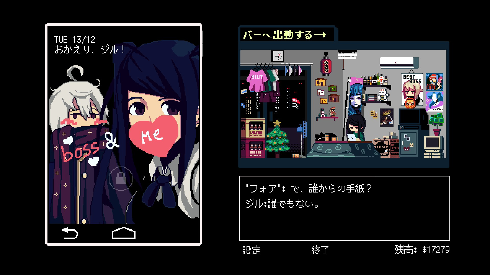
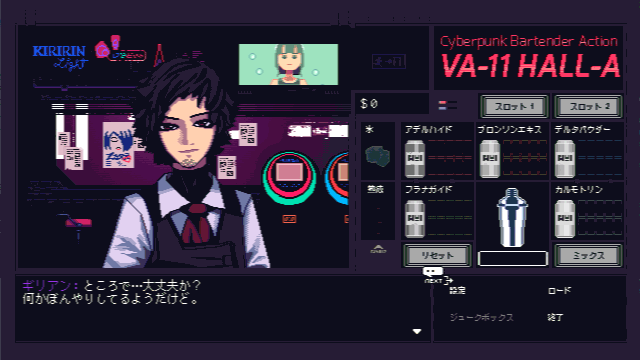
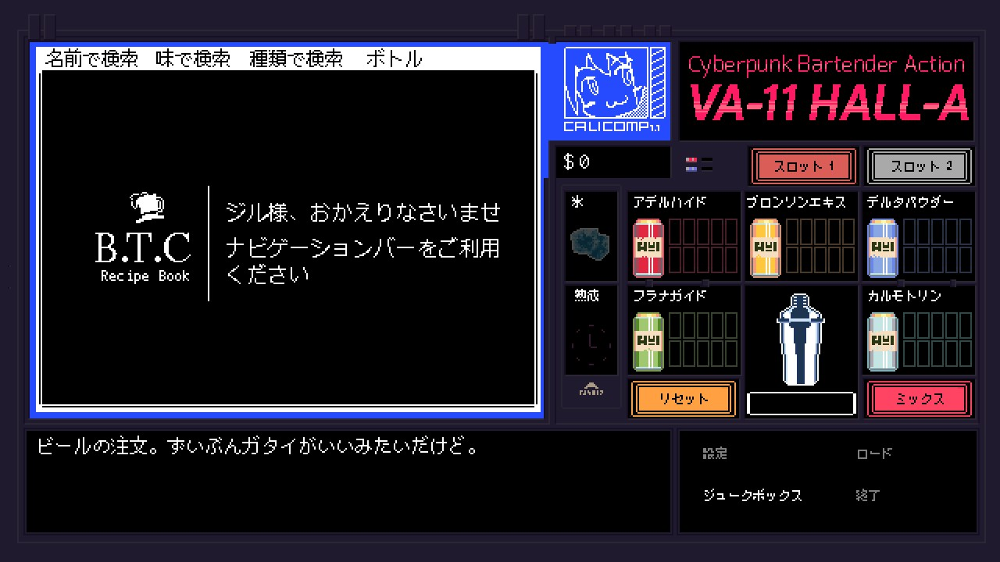
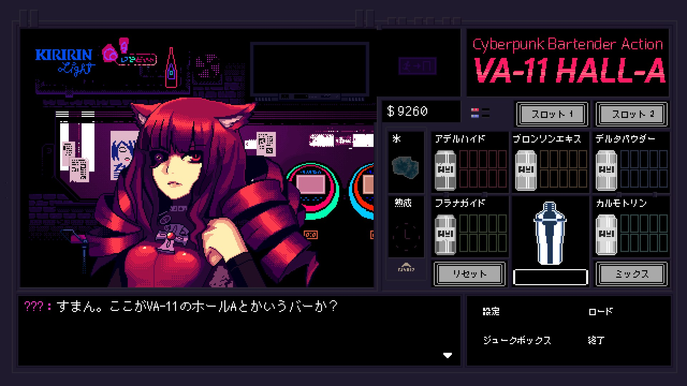
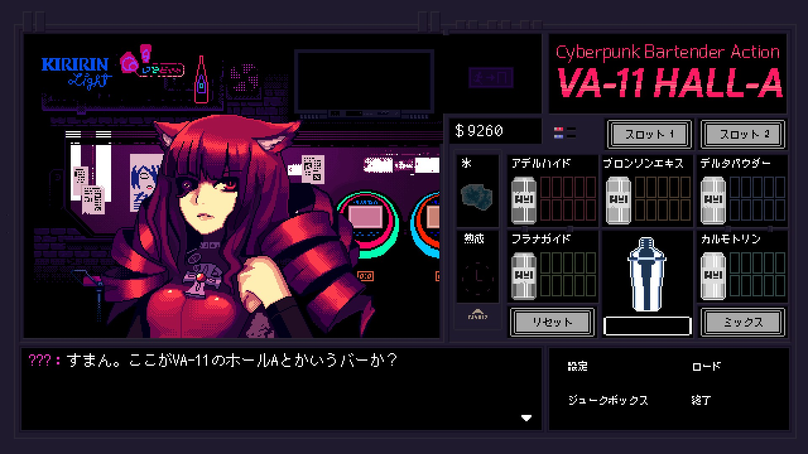

この記事はKCCT-Densan Advent Calendar 2017の23日目の記事です.
どうも、2017年12月時点で現部長のさんだびです。
先に断っておきますと、今回書くのは私がおすすめするゲームの話です。
部長なのに技術系のアレについて書かないのもアレですが、申し訳ありません。
あまりそういったことにのめり込んでいない故に書くことがないせいです。許し亭ゆるして
お客様ぁん♥ サラダをもっと美味しく、下ごしらえをもっと簡単に！
新食感の千切りがぁ、ご家庭で簡単に切れる！ こちらっ！（ｷｰﾝ）
Sukeban Games開発のVA-11 HALL-Aのご紹介です。実はネタバレがこの画像に含まれてるんですがタイトル画面がこれしか撮れないのでネタバレに気づかないでください…
ジャンル的には画像の通り「サイバーパンク バーテンダー アクション」です。
おそらくジャンル名からはどんなゲームかどうか全く想像つかないかと思いますが、
サイバーパンク でディストピア な街にあるバー、VA-11 HALL-A で
バーテンダー として客にカクテルを給仕（ACTION! ）するゲームです。
いまの概要で「あ～なるほど！そんなゲームなのね！」となった人はもうこのゲームを買ってしまったらいいと思います。
ならなかった人には今から口下手な私がなんとなく説明していきます。
あくまでこういうゲームがあるんだ～程度の説明とさせて頂きますのでお願いします。
このゲームはちゃんとジャンル分けするとビジュアルノベルにあたります。
また、タイトル画面の時点でお気づきかもしれないですがグラフィックはドット絵です。
ちなみに、このゲームの開発チームであるSukeban Gamesはベネズエラの開発チームだそうです。すごいセンスですね…

自宅の様子です。
このドット絵が結構よくて、綿密で綺麗です。ドット絵が好きな方にはなかなか刺さるのでは。

実際のプレイ動画はこんな感じ。グラフィックはPC-98ライクとも呼ばれているのをよく見ます。自分はその時代のゲームはよく知りませんが…。
このゲームは上で述べたように主人公・ジルがVA-11 HALL-Aのバーテンダーとして客にカクテルを給仕するゲームです。
まずはそのカクテルの給仕の仕方についてかる～く説明していきたいと思います。

上の画像のように、客から注文が来ると作り方のメニューが表示されるので、後はメニューの指示通りに注文のカクテルを作るだけです。
この画像では画面下部に何を頼まれたかジルが覚えていてくれているので、その通りにカクテルを作るだけですが、
仕事が終わり自宅に戻った時のジル自身の要求などを満たすことができないと、次の仕事中に気が散ってしまい覚えられなくなります。わがままですね
カクテルを作るときはこんな感じ。こんなに急ぐ必要はないです。時間切れで客にキレられる要素はありません。
全てのカクテルは5つの材料から構成されており、それぞれ
と呼びます。一応甘味とか刺激とか各材料がどんな味・印象を強めるかはあるみたいですが、特に覚える必要もないです。
ただし、カルモトリンだけは別で、これはいわゆるアルコールの成分です。
カクテルによってはこのカルモトリンの量について指定がないカクテルがあります。
つまり、客を酔わせたければ大量に入れてもいいし、全く入れなくてもよしというわけです。
そこの判断はプレイヤー次第となっており、コレが客から面白い話を聞くきっかけになったりします。
ちなみに、上の動画では全ての材料を倍で入れてますが、入れる材料が合計10個以下のカクテルはそうすることで
ビッグサイズにすることができます。客を見てよく飲みそうかどうかで決めましょう。
基本的にプレイヤーが実際に何かするのは以上です。本来のゲーム性が見えてきませんね。ビジュアルノベルゲーのはずですよね。
ここまで見ればただ単にカクテルを出すゲームですが、では何が私をここまで熱くこのゲームを布教させようとしているのでしょう。
それは、主人公のジルと客との会話や、VA-11 HALL-Aで働く人々との会話がとてもユーモラスで面白いからです。
さらにキャラクター全員がとってもユニークで心惹かれると思うからです！
 

ようやくビジュアルノベル要素について触れていきます。といってもちょっとだけ
サイバーパンクでディストピアな街、そんな場所にあるバーには心に複雑なものを抱えている人しか客に来ません。
そういった客からされる話はもちろん普通の話ではなく、何かしら「普通ではない」話を聞けます。
どういった客が来るのかというと、24時間自分の生活を配信している女の子や、ホワイトナイトという警察のような立場の人間、
ウェブニュースの編集長やアンドロイドのアイドル、巨乳でブロンドで美人で片手が義手のハッカーなど…
バーに訪れる客について挙げだすとキリがない上に多少ネタバレになりかねないのですが、人間以外の客も割りといます。
このゲームの世界では人間の他に、「リリム」と呼ばれるアンドロイド、人間の言葉を喋る犬などが共存していて、客としても登場します。
キャラデザも上の通りキテます

そうです。基本的には何かしら個性的なキャラクターにカクテルを出し、ちょっとした話を聞くだけのゲームなのです。
主人公はあくまで第三者、客個人が抱える問題には深く干渉できないのがただのバーテンダーであることを強く思わせてくれます。
だが、それがいいのです！恐ろしく複雑で同情してしまうような問題を抱えてる人々に対してカクテルを出し、
ほんのちょっとだけ助言をすること以外に何もできないのが「自分は普通のバーテンダー」という気持ちにさせてくれます。
一日を変え、一生を変えるカクテルを ――タイトルでもあるこのセリフは仕事を始める前にジルがよく言うセリフです。
確かにジルは普通のバーテンダーです。それでもその唯一できることであるカクテルを給仕することで人の助けになれるのです。
客の抱える問題を解決するのは結局は客自身です。ですが、その手助けはすこーしだけできるのです。
この微妙に関わりきれない感じがとてもよいのです…。
また、ジル自身も過去に色々あった人間であり、自分自身の過去についてゲームを進めていくと少しづつ分かってきます。
その過去の問題について、ジルはどう対処するべきか色々悩むのですが、それが非常に普通の人間臭くてもやもやします。
でもそのもやもやが非常にいいです。この点でもジルが「仕事がバーテンダーなだけの普通の人間」なんだと思わせてくれます。
この二点とその他もろもろの人間関係などが、このゲームの世界（雰囲気）にのめり込んでしまう要因なんだと思います。
逆にこういった人間ドラマのようなものが苦手な人はあんまり受け付けないかもしれません。
今回はインディーゲームで良さげなものを漁っていて見つけたゲームについての紹介をさせていただきました。
インディーゲームはAAAタイトル級のグラフィックやシナリオはなく粗削りなものが多いですが、面白いものを見いだせるので楽しいですよ。
VA-11 HALL-Aについてあまり喋りすぎると誤ってネタバレを言ってしまいかねない上に、
これ以上書いても人に伝わらない熱意しか書くことがないのでやめておきます。正直、今まで書いてきたこの文章でも伝わってる気がしません
没入感が結構すごいゲームなので一度ハマればクリアしてしまうまでどっぷりはまれると思います。クリアしたあとの虚無感が半端ないですが…。
あと、苦手な人は注意っていうか買わないほうがいいのですが、下ネタが話の8割を占めます！！！
ジョークとして受け取れる人だけやってください。サイバーパンクでディストピアだから仕方がない！
後は、Steamのストアページだけ貼って終わりにしたいと思います。Steamのレビューのほうが面白いし分かりやすいしそっちを参考にしたほうがいい…ですよ…
ここまで読んでくださった方がもしいれば感謝しきれません。ありがとうございました。